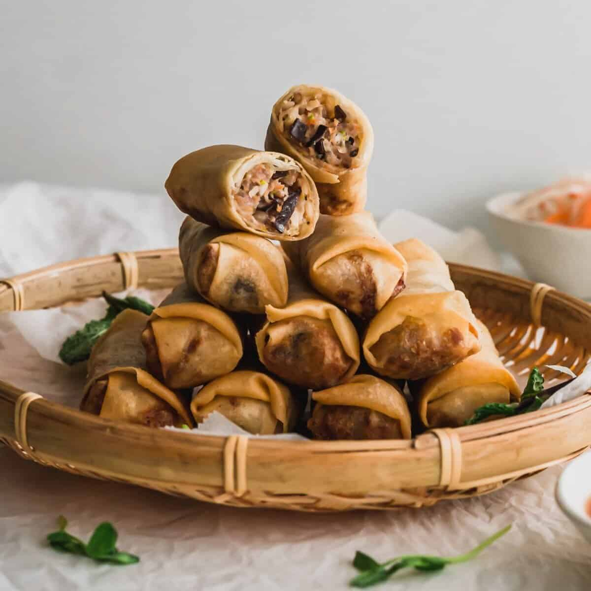

Home
Cha Gio

Description
Cha gio or Vietnamese egg rolls is one of my favorite Vietnamese dishes, appearing at dinner parties and family dinners alike. It is such a versatile dish that can be eaten as an appetizer dipped in nuoc cham or in a vermicelli bowl like bun cha gio. This blog post will teach you how to make a large batch of authentic cha gio, and how to achieve consistent results every time!
Ingredients
Rolls:
- Dried rice paper and tapioca wrappers
- Sugar
- Vegetable oil
- Dried glass noodles
- Peeled, deveined and finely chopped shrimp
- Ground pork
- Shallots, finely chopped
- Carrots, shredded
- Wood ear mushrooms, chopped
- Cloves garlic, grated
- Eggs
- Fish sauce
- Soy sauce
- Pepper
- Salt
Dipping sauce:
- Fish sauce
- Vinegar
- Sugar
- Lime juice
- Red chilli, finely chopped
- Cloves garlic, finely chopped
Steps
- For the nuoc cham, whisk together the ingredients and set aside until ready to serve.
- To make the filling, soak the glass noodles in hot water for about 10 minutes or until just softened. Drain well and rinse in cold water to stop the noodles from cooking further. Drain well and place onto a clean tea towel. Twist the tea towel around the noodles to extract as much water as possible. Place the noodles in a large bowl. Use scissors to cut the noodles into shorter lengths.
- To the noodles, add the shrimp, pork, shallots, carrot, mushroom, garlic, egg, fish sauce, soy sauce, sugar, pepper and salt. Mix until well combined and tacky.
- Place a clean damp tea towel or paper towel on your work surface.
- In a large bowl, whisk together 4 cups of warm water with 1 tablespoon of sugar.
- Place a rice paper wrapper onto the damp tea towel and dip your fingers into the sugar water. Coat the wrapper in the sugar water to just coat it in the liquid. Once pliable, place two heaping tablespoons of the filling onto the bottom half of the wrapper. Shape the filling into a cylinder shape. Fold the bottom of the wrapper over the filling and squeeze to expel any air. Fold in the sides and then roll up into a cylinder shape.* Place on a tray lined with parchment. Repeat until all the filling is used.
- Place the tray of spring rolls into the fridge uncovered for 30 minutes.
- Fill a saucepan or wok to about 1/3 capacity with the vegetable oil. Heat over medium heat.** Once the oil is hot (325°F or when a wooden spoon dipped into the oil forms small little bubbles) cook spring rolls until golden and blistered - about six to eight minutes. Drain on kitchen paper. For maximum crispiness, let cool and fry again for about three minutes.
- Serve with the nuoc cham dipping sauce and use the lettuce leaves to wrap up the spring rolls along with a few mint leaves or herbs of your choice.